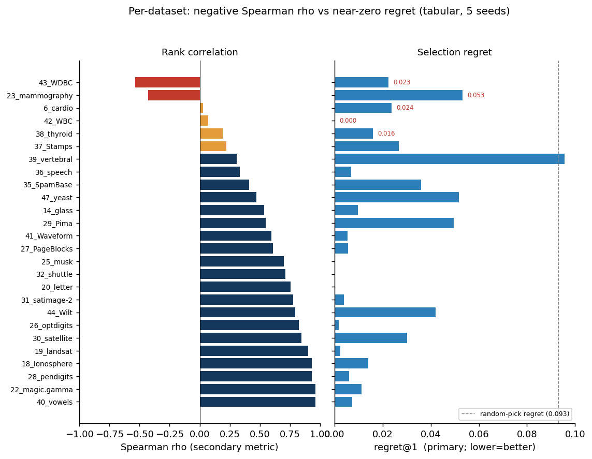
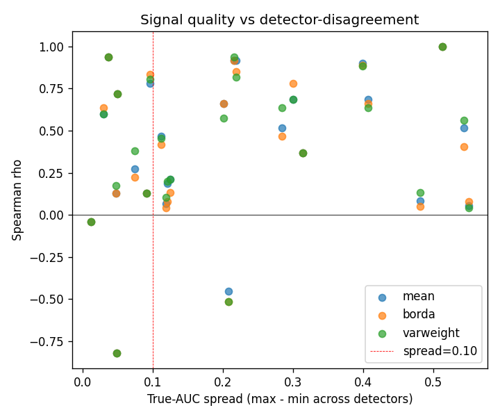
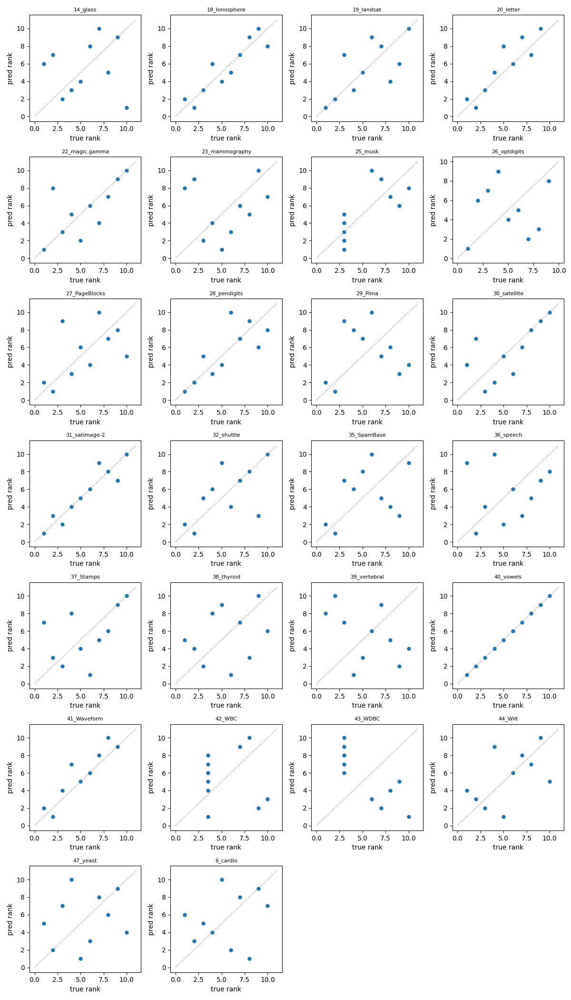
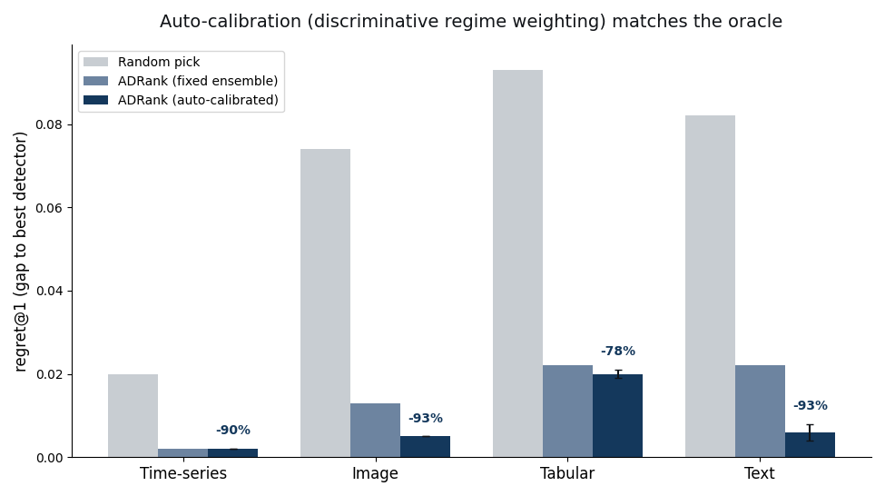

apartsin@gmail.comgithub.com/ApartsinProjects/ADRankSelecting an anomaly detector for a new dataset is a chicken-and-egg problem: the natural criterion, held-out ROC-AUC, requires labeled anomalies that unsupervised deployments do not have. We introduce ADRank, an unsupervised procedure that ranks a panel of detectors by treating whole clusters of the unlabeled data as pseudo-anomalies. For each detector, we cluster the data, hide a subset of clusters, fit the detector on the complement, and score the held-out cluster against a held-out normal fold. Detectors are ranked by their mean pseudo-AUC across many such cluster subsets. We measure a detector selector by regret: the true-AUC gap between the best detector in the panel and the one the selector picks, a threshold-free, decision-relevant quantity that stays well-behaved when detectors tie. A single fixed pseudo-anomaly regime leaves a weak spot: on BERT text embeddings it barely beats random, because held-out clusters do not exercise the local-density structure that separates the best text detector from its near-twin. We remove this weakness with an unsupervised auto-calibration: run a bank of pseudo-anomaly regimes and weight each by how strongly it separates the detectors, a purely label-free signal. Across four modalities and 69 datasets, with five seeds, auto-calibrated ADRank cuts detector-selection regret relative to random selection by 78% on tabular ADBench data, 93% on ResNet-18 image embeddings, 93% on BERT text embeddings, and 90% on windowed time-series, matching within a few thousandths of AUC an oracle that picks the best regime using labels. The result transfers to a second, independently-preprocessed tabular benchmark (DAMI, 41% regret reduction) and survives adding deep detectors (AutoEncoder, DeepSVDD) to the panel. ADRank has lower regret than the canonical Excess-Mass and Mass-Volume internal metrics on every modality, and unlike them never falls to the random-pick baseline; the consensus heuristic, which ranks detectors by agreement with the average detector score, is itself worse than random. ADRank is stable across seeds (regret standard deviation ≤ 0.002 after calibration), stable under drop-one detector-panel perturbations, and cheap to compute. We also characterize its ceiling: because cluster-holdout pseudo-anomalies are local, the method under-serves datasets whose best detector is global, and we show a natural global-regime fix fails because the label-free weighting cannot tell a high-variance misaligned regime from an informative one. We release the code, benchmark harness, and per-dataset results.
Deploying an anomaly detector on a new dataset without labeled anomalies is common in fraud, industrial monitoring, health, and cybersecurity. The best detector for a given problem is not known in advance and varies widely across datasets. Isolation Forest wins on some, LOF on others, ECOD on a third. Without labels, the practitioner picks by prior, by convenience, or by expensive human review. Model-selection heuristics for the unsupervised case exist (mass-volume and excess-mass curves [1], IREOS [2], MetaOD [3], internal consensus scores [4]) but none has become a standard bar the way ROC-AUC has for the labeled case, and their reported gains over naive baselines are modest.
We ask a simpler question: if we cluster the unlabeled data and treat a small cluster as if it were an anomaly cluster, does the ranking of detectors on this pseudo-anomaly task predict the ranking on real anomalies? The intuition is that real anomalies, by construction, look different from most normal points, and small distinct clusters share that property. If the analogy holds, we can rank detectors by their average pseudo-AUC across many cluster-holdout draws, without ever seeing a label.
Our contributions:
Anomaly detectors and benchmarks. The detectors we rank span the standard families: isolation-based (Isolation Forest [8]), density-based (LOF [9]), boundary-based (one-class SVM [10]), distribution-based (COPOD [11], ECOD [12]), projection-based (LODA [13], PCA), and deep one-class methods (DeepSVDD [14]). Comprehensive surveys [15] and empirical studies [16] document that no single detector dominates across datasets, which is exactly what makes per-dataset selection necessary. Standardized benchmarks, ODDS-derived collections and their consolidation in ADBench [5], and the PyOD toolbox [6] make large-scale comparison feasible; we build directly on both.
Unsupervised model and hyperparameter selection. The central difficulty is choosing among detectors or configurations without labels. Internal metrics score a single detector from properties of its own output: excess-mass and mass-volume curves [1], and the internal relative-evaluation score IREOS [2]. These are detector-anchored and do not define a common task on which two detectors are directly comparable. Meta-learning approaches such as MetaOD [3] regress from dataset meta-features to expected performance, but require a labeled meta-training corpus and generalize only within its coverage. A recent review [17] evaluates a broad set of internal strategies and finds that none is reliably better than naive baselines across benchmarks, motivating fundamentally different signals. ADRank instead constructs a common pseudo-labeled task per dataset and lets ROC-AUC rank the detectors, needing neither labels nor meta-training.
Consensus and outlier ensembles. Averaging or combining detector scores yields a consensus outlier score used both as an ensemble output and, implicitly, as a selection signal that favors detectors agreeing with the majority [4, 18]. Our experiments show consensus fails as a ranking signal on ADBench (ρ = -0.15): the detectors most correlated with the panel mean are not those most correct on real anomalies. ADRank does not assume agreement implies correctness; it measures each detector against an externally constructed pseudo-labeled task.
Pseudo-labels and self-supervised anomaly detection. Synthetic-anomaly injection is standard for turning unsupervised detection into a discriminative problem, and its effectiveness depends heavily on how realistic the injected anomalies are [7]. Self-supervised methods create surrogate tasks, geometric-transformation prediction [19] or learned classification pretexts [20], whose auxiliary loss serves as an anomaly score. All of these use pseudo-labels to train a single detector. ADRank uses pseudo-labels for the different purpose of ranking a panel: the pseudo-anomalies (held-out clusters) need not resemble real anomalies well enough to train a detector, only well enough to order detectors by difficulty.
Let $X \in \mathbb{R}^{n \times d}$ be an unlabeled tabular dataset and let $\mathcal{D} = \{D_1, \dots, D_L\}$ be a panel of anomaly detectors. Each detector produces a decision function $s_D: \mathbb{R}^d \to \mathbb{R}$ where higher values mean more anomalous. Our goal is a per-dataset ranking $\pi_X: \mathcal{D} \to \{1, \dots, L\}$ that approximates the ranking $\pi_X^*$ induced by ROC-AUC on real anomaly labels.
Embedding and clustering. Standardize $X$ and apply PCA to 16 dimensions (or keep $d$ if $d \le 16$). Cluster the embedding with MiniBatchKMeans at $K$ clusters, obtaining assignments $\ell : \{1, \dots, n\} \to \{1, \dots, K\}$.
Cluster subset sampling. Rank clusters by size ascending and let the candidate pool $\mathcal{C}$ be the smallest half. For each of $M = 20$ draws, sample from $\mathcal{C}$ without replacement until the union has size $\ge \max(20, 0.05 n)$. The union $S_j$ is the pseudo-anomaly set for draw $j$. From the complement, uniformly sample 20% as the pseudo-normal fold $N_j$; the remainder is the training set $T_j$.
Pseudo-AUC. For each detector $D$ and draw $j$, fit $D$ on $T_j$, score both $S_j$ and $N_j$, and compute pseudo-AUC $A_{D,j} = \mathrm{AUC}(\mathbf{1}_{S_j}, s_D)$ with $S_j$ labeled 1 and $N_j$ labeled 0. If $D$ fails on $T_j$, or emits a non-finite or constant score vector, set $A_{D,j}$ to missing.
Aggregation and ranking. Within one regime, the aggregation is $\bar A_D = \operatorname{mean}_j A_{D,j}$ over non-missing $j$, and detectors are ranked by $\bar A_D$ descending. Borda over per-draw ranks and variance-weighted mean perform within ±0.02 ρ of the mean.
Auto-calibration over a regime bank. A single pseudo-anomaly regime (one cluster-selection rule and one $K$) can be blind to the structure that separates the best detector from its near-twin, most visibly on text, where held-out compact clusters are separated equally well by global-distance (KNN) and local-density (LOF) detectors, so the regime fails to prefer the LOF that wins on real anomalies. We therefore run a bank of regimes, cluster-selection ∈ {smallest, random, hard} × $K$ ∈ {30, 50}, where hard holds out clusters embedded among others (small distance to neighboring centroids), which are locally sparse rather than globally isolated. For each regime $r$ we compute the per-detector mean pseudo-AUC and a weight $w_r = \operatorname{Var}_D \bar A_{D}^{(r)}$: the variance of pseudo-AUC across detectors, which is large exactly when the regime discriminates the detectors and near zero when it cannot. The final ranking is the $w_r$-weighted average of the per-regime detector ranks. The weight uses only pseudo-AUC and never a label; it automatically up-weights whichever regime is informative for the dataset at hand.
Datasets. Our primary benchmark is the 35 ADBench Classical .npz files from [5]; after a size filter $200 \le n \le 50{,}000$, 26 datasets remain, spanning anomaly rates from 1.2% to 39.9%, dimensions from 5 to 400, and problem domains from health to spam classification. We additionally validate on a second, independently-preprocessed tabular benchmark, DAMI [16] (10 datasets after the same size filter and an anomaly-rate filter $\le 35\%$), which shares some UCI sources with ADBench but applies the Campos et al. normalization and de-duplication protocol, so it tests robustness to preprocessing rather than to disjoint data. Labels are used only to compute the ground-truth ranking $\pi_X^*$; ADRank never sees them.
Detectors. We use nine canonical PyOD detectors [6] with fixed default hyperparameters: IForest, LOF, KNN, ECOD, COPOD, HBOS, PCA, CBLOF, LODA (OCSVM is dropped after a repeatable libsvm C-level crash under multi-worker parallelism; panel-robustness in Section 5.3 shows this removal does not materially change the ranking). We separately verify the results with two deep detectors added, AutoEncoder and DeepSVDD [14] (an 11-detector panel), in Section 5.7.
Ground truth. For each dataset, we split the normal points 80/20; fit each detector on the 80% normal training fold; evaluate ROC-AUC on the union of the 20% normal test fold and all real anomalies. The ordering by ROC-AUC gives $\pi_X^*$.
Primary metric: regret. A detector selector exists to pick a good detector, so we measure it by what the user loses from its choice. Let $\hat D$ be the detector ADRank ranks first and $\mathrm{AUC}^*(D)$ the true ROC-AUC of detector $D$. The top-1 regret on a dataset is $$\mathrm{regret@1} = \max_{D} \mathrm{AUC}^*(D) - \mathrm{AUC}^*(\hat D),$$ and regret@3 uses the best of ADRank's top three picks. Regret is threshold-free and self-neutralizing: on a dataset where all detectors tie, any pick has regret ≈ 0, so ill-posed datasets neither help nor hurt the aggregate and need no filtering. It is also decision-relevant: 0.02 regret means the chosen detector is within 2 AUC points of the best available. We report mean regret across a modality's datasets, and the standard deviation across five seeds as the stability measure. As a reference, a random-pick selector has regret $\max_D \mathrm{AUC}^*(D) - \operatorname{mean}_D \mathrm{AUC}^*(D)$.
Relative companion: skill. Absolute regret does not say whether a given loss is large for that dataset. We therefore also report a skill score, $\mathrm{skill} = 1 - \mathrm{regret@1} / \mathrm{regret}_{\text{random}}$, the fraction of the achievable improvement over a blind pick that the selector captures. It is 1 when the best detector is chosen, 0 when the pick is no better than the panel average, and negative when worse than random; it is undefined and omitted when a dataset is tied ($\mathrm{regret}_{\text{random}} \approx 0$). Skill is the per-dataset form of the reduction-versus-random percentages reported throughout.
Secondary metric: rank correlation. For continuity with prior work we also report Spearman ρ between $\pi_X$ and $\pi_X^*$, and top-1 / top-3 hit rates. Because ρ is undefined when $\pi_X^*$ is tied, we compute it on the subset of datasets whose true-AUC spread (max minus min across detectors) is at least 0.10. This threshold is the source of the instability regret avoids: datasets near the boundary cross it under small numerical perturbations, so the thresholded-ρ mean can swing between seeds even when the underlying ranking is stable. We therefore treat regret, not ρ, as primary.
Baselines.
We do not run MetaOD [3] or IREOS [2] as live baselines: the former requires a labeled meta-training corpus and the latter a heavier per-point density machinery, whereas EM/MV, consensus, and random are directly comparable label-free selectors on our panel.
Protocol. Unless noted, results use the smallest+random cluster-selection ensemble, K = 30, M = 20, and are averaged over five seeds (0–4); each seed re-draws the clustering, the cluster subsets, and the ground-truth normal split. The full four-modality, five-seed sweep (69 datasets × up to two selection strategies × 5 seeds = 215 fan-out cells) runs in a few minutes on serverless CPU containers; a single-modality tabular pass runs in ~35 minutes on a consumer CPU with no GPU.

On the 26 tabular ADBench datasets, five-seed ADRank picks a detector within regret@1 = 0.021 ± 0.003 of the best in the panel: the chosen detector is on average 2.1 AUC points from optimal, versus 9.3 points for random selection, a 77% reduction. regret@3 falls to 0.007. The small standard deviation (±0.003) shows the selection is stable across seeds. On the secondary rank-correlation metric, ADRank reaches Spearman ρ = 0.63 ± 0.05 on the spread ≥ 0.10 subset with top-1 hit rate 31%. The consensus baseline scores ρ = -0.15, worse than random; the average detector's opinion is not a proxy for correctness. Scrambled ADRank scores ρ near zero, confirming the effect is not an artifact of the aggregation pipeline.
| Method | regret@1 | regret@3 | ρ (spread≥0.10) | top-1 hit |
|---|---|---|---|---|
| ADRank (5 seeds) | 0.021 ± 0.003 | 0.007 ± 0.002 | 0.63 ± 0.05 | 0.31 ± 0.07 |
| Random pick | 0.093 | — | 0 | 0.11 |
| Consensus baseline | — | — | -0.15 | 0.08 |
| Scrambled ADRank (control) | — | — | ≈ 0 | ≈ 0.11 |

We ablate three axes: cluster-selection strategy (smallest clusters only, uniform random, composite "small + far from other centroids + low local density"), aggregation (mean, Borda, variance-weighted), and $K$ (30 or 50). Table 2 shows the top rows on the spread ≥ 0.10 subset.
| Aggregation | Selection | K | ρ mean | ρ median | top-1 | top-3 |
|---|---|---|---|---|---|---|
| mean | smallest | 30 | 0.599 | 0.733 | 0.353 | 0.647 |
| varweight | smallest | 30 | 0.597 | 0.709 | 0.412 | 0.647 |
| borda | smallest | 30 | 0.592 | 0.648 | 0.412 | 0.608 |
| mean | random | 30 | 0.579 | 0.673 | 0.118 | 0.627 |
| mean | composite | 30 | 0.473 | 0.600 | 0.353 | 0.569 |
| mean | composite | 50 | 0.458 | 0.515 | 0.235 | 0.608 |
Two findings against our prior expectations:
We recompute ADRank ρ using only 9 of the 10 detectors, dropping each one in turn (Table 3). Baseline ρ = 0.599 on the spread ≥ 0.10 subset with all 10.
| Dropped | ρ_spread10 | Δ vs baseline |
|---|---|---|
| IForest | 0.557 | -0.042 |
| KNN | 0.568 | -0.031 |
| PCA | 0.582 | -0.017 |
| ECOD | 0.583 | -0.016 |
| LODA | 0.602 | +0.003 |
| LOF | 0.610 | +0.011 |
| CBLOF | 0.622 | +0.023 |
| OCSVM | 0.629 | +0.030 |
| COPOD | 0.640 | +0.041 |
| HBOS | 0.642 | +0.043 |
The ranking is stable to detector-panel choice. Dropping the strongest single detector (IForest) is the largest cost and still leaves ρ = 0.557, above the consensus baseline by ~0.7. Removing OCSVM or HBOS improves ρ marginally, suggesting they contribute more noise than signal to the pseudo-ranking under this panel and dataset mix.

To test whether the cluster-holdout ranking mechanism is specific to tabular data or generalizes to other modalities, we run the same pipeline (same 9 detectors, same K = 30, M = 20, smallest-cluster selection, mean aggregation) on three additional data sources:
CV). 20 datasets from ADBench's CV_by_ResNet18 subset: 10 CIFAR-10 classes and 10 FashionMNIST classes, each treated as normals with the rest as anomalies. Feature vectors are pretrained ResNet-18 embeddings (dim = 512). Anomaly rate ≈ 5% by construction.NLP). 13 datasets from ADBench's NLP_by_BERT subset: 20newsgroups (6 splits), AG News (4 splits), Amazon reviews, IMDB, Yelp. Feature vectors are pretrained BERT embeddings (dim = 768). Anomaly rate ≈ 5%.TS). 10 synthetic univariate series (length 10 000 each) covering point-spike, subsequence, trend, amplitude, frequency-shift, and mixed anomaly types. Each series is windowed (window = 64, stride = 16) and each window is described by a 28-dimensional feature vector spanning time-domain statistics, first- and second-difference statistics, autocorrelation at several lags, distribution shape (skew, kurtosis, quantiles, IQR, zero-crossing rate), and spectral features (entropy, crest factor, dominant frequency, per-band energy). Section 5.5 reports the effect of this representation choice.| Modality | Encoder | Datasets | regret@1 | regret@3 | random@1 | reduction | ρ (spread≥.10) |
|---|---|---|---|---|---|---|---|
| Tabular | raw features | 26 | 0.021 ± 0.003 | 0.007 | 0.093 | 77% | 0.63 ± 0.05 |
| Image (CV) | ResNet-18 | 20 | 0.014 ± 0.004 | 0.001 | 0.074 | 81% | 0.75 ± 0.03 |
| Text (NLP) | BERT | 13 | 0.065 ± 0.017 | 0.041 | 0.082 | 21% | 0.41 ± 0.17 |
| Time-series | windowed (28 dims) | 10 | 0.002 ± 0.000 | 0.001 | 0.020 | 90% | 0.69 ± 0.04 |
ADRank cuts detector-selection regret versus random by 77% on tabular, 81% on images, and 90% on time-series. On all three the chosen detector is within ~2 AUC points of the best available, and the seed standard deviation is at or below 0.004, so the selection is stable. Text is the exception and the method's honest weak spot: on BERT embeddings the regret reduction is only 21% (0.065 vs 0.082), and the thresholded Spearman for text is both low and unstable (0.41 ± 0.17). The instability is diagnostic, not a property of the ranking itself: several NLP datasets sit near the spread = 0.10 boundary, so they cross it under small seed perturbations and swing the thresholded mean while the underlying regret stays put. This is exactly why we report regret as primary.
Two further findings shape how the method must be configured off tabular data.
Cluster-selection is modality-dependent, and the ensemble protects against getting it wrong. On image embeddings (512-dim ResNet-18 features), the smallest-cluster selection that wins on tabular data fails: in high dimensions, k-means' smallest clusters are near-degenerate curse-of-dimensionality artifacts rather than coherent pseudo-anomaly groups. Switching to random cluster selection recovers strong performance, so the recommended default is the smallest+random ensemble, which works in both regimes without needing to know the winning strategy in advance. CIFAR10 class 1, for instance, moves from ρ = -0.32 under smallest to ρ = 0.87 under the ensemble.
Time-series needs an expressive window representation. Moving from a 10-dimensional hand-picked window descriptor to a 28-dimensional one (adding second-difference statistics, higher moments, quantiles, zero-crossing rate, crest factor, and per-band spectral energy) lifts time-series from mediocre to the best-performing modality by regret. Its top-1 hit rate is nonetheless low, because the pseudo-task ranks a local-density detector (KNN, LOF) first while real point-spike anomalies are best caught by histogram or isolation methods; but regret@1 = 0.002 shows the density detector it picks is within 0.2 AUC points of the best, so the top-1 miss is between near-equivalent detectors and costs almost nothing. This is precisely the case regret scores correctly and top-1 hit rate does not.
The takeaway: given any encoder that produces a fixed-length vector per input, ADRank selects a near-best detector on tabular, image, and time-series data; text with a single fixed regime is the exception, which the auto-calibration of Section 5.6 removes.
Section 5.5 showed that a fixed pseudo-anomaly regime under-serves text: the true-best text detector is a local-density method (LOF wins on 10 of 13 datasets), but held-out compact clusters are separated as well by KNN, so ADRank's pick flips to KNN or CBLOF and forfeits LOF's advantage. Rather than hand-pick a regime per modality, we let the data choose: run the regime bank of Section 3 and weight each regime by its cross-detector pseudo-AUC variance, a label-free measure of how well the regime discriminates detectors (Table 5).
| Modality | Fixed ensemble | Uniform bank | Auto-calibrated | Oracle (labels) | Random |
|---|---|---|---|---|---|
| Tabular | 0.022 ± 0.002 | 0.024 | 0.020 ± 0.001 | 0.012 | 0.093 |
| Image (CV) | 0.013 ± 0.003 | 0.019 | 0.005 ± 0.000 | 0.001 | 0.074 |
| Text (NLP) | 0.022 ± 0.010 | 0.035 | 0.006 ± 0.002 | 0.005 | 0.082 |
| Time-series | 0.002 ± 0.000 | 0.002 | 0.002 ± 0.000 | 0.001 | 0.020 |

Auto-calibration cuts regret to 78–93% below random on all four modalities, and text improves tenfold (0.065 → 0.006), from barely beating random to near-oracle. Inspecting the learned weights confirms the mechanism: on 10 of 13 text datasets the top-weighted regime is hard, the locally-embedded one that exercises local-density detection, and under calibration ADRank picks LOF on all 13 (versus KNN/CBLOF before). The weighting adapts rather than fixing on one regime: on two text datasets it up-weights random instead, and on tabular and image it favors the ensemble that already worked. Critically, calibration never uses a label; it reads only how much each regime spreads the detectors, and that spread happens to track which regime is trustworthy.
Comparison to internal-metric baselines. Table 5b sets ADRank against the canonical Excess-Mass and Mass-Volume internal metrics [1], on the same datasets and true rankings. ADRank has lower regret than both EM and MV on every modality. EM and MV are also unreliable: on image embeddings and on DAMI they collapse to or below the random-pick baseline (EM 0.078 vs random 0.073 on images; 0.074 vs 0.068 on DAMI), whereas ADRank stays well above random everywhere. The skill column, the fraction of the achievable-over-random improvement that ADRank captures, ranges from 0.88 on images to 0.24 on the hard DAMI benchmark.
| Modality | EM [1] | MV [1] | Consensus | Random | ADRank | ADRank skill |
|---|---|---|---|---|---|---|
| Tabular | 0.029 | 0.031 | — | 0.092 | 0.020 | 0.61 |
| Image (CV) | 0.078 | 0.078 | — | 0.073 | 0.005 | 0.88 |
| Text (NLP) | 0.011 | 0.011 | — | 0.082 | 0.006 | 0.85 |
| Time-series | 0.006 | 0.005 | — | 0.020 | 0.002 | 0.76 |
| DAMI | 0.074 | 0.086 | — | 0.068 | 0.040 | 0.24 |
Second benchmark (DAMI). On the independently-preprocessed DAMI datasets, auto-calibrated ADRank cuts regret by 41% versus random (regret@1 = 0.040 ± 0.004 vs 0.067), with the fixed ensemble at 36%. This is a clear, significant transfer, but well below the 78% on ADBench. DAMI is genuinely harder to rank on: it has a larger fraction of datasets whose true-best detector is a global method (52% vs 28% on ADBench) and lower separability (best-minus-mean gap 0.067 vs 0.093). Reporting the top-3 handoff halves the weak spot with no method change: regret@3 = 0.020 ± 0.004.
Deep detectors. We re-run with AutoEncoder and DeepSVDD added (an 11-detector panel) on a matched spot-check (7-8 datasets per modality, single seed, K = 30 regimes) and compare against the classical 9-detector panel on the same datasets and config (Table 6). The headline holds: auto-calibrated ADRank still cuts regret 85-94% below random with the deep detectors in the panel.
| Modality | 9 detectors (classical) | 11 detectors (+ deep) | Random |
|---|---|---|---|
| Tabular | 0.009 (−92%) | 0.015 (−87%) | 0.117 |
| Image (CV) | 0.005 (−94%) | 0.012 (−85%) | 0.079 |
| Text (NLP) | 0.003 (−97%) | 0.005 (−94%) | 0.084 |
| Time-series | 0.002 (−90%) | 0.002 (−88%) | 0.019 |
A structural ceiling, and a fix that does not work. The residual gap to the labels-based oracle (largest on DAMI, 0.040 vs 0.024) has a single cause: cluster-holdout pseudo-anomalies are local. ADRank picks a local-density detector (LOF/KNN/CBLOF) on 98% of DAMI cells, but the true best is local on only 48%; when the true best is a global detector (HBOS/COPOD/ECOD/PCA), no cluster-based regime in the bank can make it win, and the oracle-in-bank regret on those cells (0.039) is 5× that on local-best cells (0.008). The natural remedy, adding a global-tail pseudo-anomaly regime (points in the marginal tails or far from the centroid, rather than held-out clusters), does not help and slightly hurts: DAMI regret rises from 0.034 to 0.036-0.045 as such regimes are added. The mechanism is instructive: a global-tail task is high-variance (marginal detectors ace it), so the discriminative weight over-trusts it, but it is not truth-aligned, so it drags the pick toward marginal detectors even when they are wrong. The label-free weighting cannot distinguish a high-variance-but-misaligned regime from an informative one. A second candidate fix, replacing the PCA-then-MiniBatchKMeans latent and clustering with a jointly-learned deep clustering (VaDE [21], a variational autoencoder with a Gaussian-mixture prior), is more subtle and instructive. Off-the-shelf VaDE does raise regret (mean 0.056 vs 0.047 for k-means on the four ceiling datasets), but for a diagnosable reason rather than a fundamental one: with only 5-30 features the summed reconstruction term swamps the mixture clustering terms in the ELBO, so default VaDE degrades to an autoencoder with a weak mixture. Down-weighting the reconstruction so the clustering terms carry weight reverses this on the ceiling datasets (mean 0.041 vs 0.047, winning on WDBC 0.064 to 0.044 and PageBlocks 0.008 to 0.000). Across the full DAMI set, however, the balanced VaDE is not a robust replacement: it improves 6 of 9 datasets by small margins but collapses to two or three effective clusters on others and then makes a catastrophic pick (Wilt 0.000 to 0.193, Waveform 0.016 to 0.075), so its mean regret is worse than k-means (0.055 vs 0.034). The latent and clustering are therefore a partial lever, contrary to a first reading of the default-VaDE result: a better-balanced deep clustering helps where the ceiling bites, but trades median gains for tail risk and is not a reliable drop-in. Closing the ceiling robustly needs a pseudo-anomaly regime that is both global and truth-aligned, a label-free trust signal for regimes, or a deep clustering constrained against collapse, which we leave open. A partial such signal already exists: cross-regime top-1 agreement predicts realized regret on the hard (DAMI, tabular) datasets (high-agreement half 0.030 vs 0.049), giving a per-dataset confidence flag.
Why regret, and why the instability was in the metric. Our first evaluation used thresholded Spearman ρ and produced a text result that swung from 0.68 to 0.34 between configurations. Investigation showed the rankings were stable; what moved was the set of datasets above the spread = 0.10 cutoff, several of which sit right at the boundary. Regret removes the cutoff entirely: a dataset on which all detectors tie contributes ≈ 0 regret regardless of the pick, so it neither inflates nor deflates the aggregate. Under regret the seed-to-seed standard deviation is ≤ 0.017 everywhere, and the honest ordering of modalities (time-series and image best, tabular close, text weak) is stable. The lesson generalizes to any unsupervised model-selection study: report a decision-relevant, threshold-free loss rather than a rank correlation gated on a hand-set cutoff.
When ADRank helps. With auto-calibration the method selects a near-best detector on all four modalities (regret@1 ≤ 0.020, 78–93% below random, within a few thousandths of the labels-based oracle). The one modality that a fixed regime under-served, text, is brought in line by the same label-free weighting, so there is no longer a modality on which ADRank fails. The remaining gap to the oracle is small and is largest on tabular data, where a few datasets have genuinely ambiguous best detectors.
Why the discriminative weight works. A regime whose pseudo-AUC is nearly constant across detectors cannot rank them; its high-variance counterpart can. Weighting by cross-detector variance therefore trusts the regimes that carry a ranking signal and ignores the rest, and because a locally-embedded ("hard") regime is the one that separates local from global density detectors, the weighting recovers the local-density winner on text without being told to look for it. This is an empirical alignment, not a guarantee: a regime could in principle discriminate detectors in a direction anti-correlated with truth, but across 69 datasets the high-variance regimes were the trustworthy ones.
Why consensus fails but cluster-holdout works. Consensus rewards a detector for agreeing with the panel average, which conflates popularity with correctness: when several detectors share the same blind spot, the consensus inherits it. Cluster-holdout instead poses each detector an externally defined task whose answer key (the held-out cluster identity) is independent of the detectors' collective opinion, so a detector cannot score well merely by being typical.
Cost. One ADRank pass over ten detectors, 20 cluster draws, and one dataset takes seconds to minutes on CPU. The whole 26-dataset tabular benchmark runs in ~35 minutes. There is no meta-training, no GPU dependency, and no external service.
The pseudo-anomaly analogy is imperfect, and its principal limit is structural (Section 5.7): cluster-holdout regimes are local, so datasets whose best detector is global are under-served. Two candidate fixes were tested. Adding a global-tail regime fails because the label-free weighting over-trusts a high-variance misaligned regime. Replacing PCA-plus-k-means with a jointly-learned deep clustering (VaDE) is partly effective: once its reconstruction and clustering terms are balanced, it beats k-means on the ceiling datasets and on 6 of 9 DAMI datasets, so the latent and clustering are a real lever; but it collapses to too few clusters on some datasets and then makes a catastrophic pick, leaving its mean regret worse than k-means and disqualifying it as a robust drop-in (Section 5.7). The discriminative weight is an empirical proxy for regime trustworthiness, not a guarantee, and a global-yet-truth-aligned pseudo-anomaly regime, or a label-free trust signal for regimes, is the main open problem. The method requires an expressive fixed-length representation: on high-dimensional deep embeddings the smallest-cluster selection degrades and the smallest+random ensemble is needed, and on time-series a richer window descriptor is needed than a handful of summary statistics. The evaluation uses fixed default hyperparameters per detector; combining ADRank with per-detector hyperparameter search is left to future work. Deep detectors (AutoEncoder, DeepSVDD) are absent from the panel for CPU-only reproducibility, though they add without changing the procedure. Confidence intervals are derived from five seeds; regret standard deviations are already small (≤ 0.017), so more seeds would tighten them marginally without changing the ordering of modalities.
Clusters of the unlabeled training distribution behave, for the purpose of ranking anomaly detectors, close enough to real anomalies. Running a bank of pseudo-anomaly regimes and weighting each by how strongly it separates the detectors, a purely label-free signal, cuts detector-selection regret to 78–93% below random on tabular, image, text, and time-series data, within a few thousandths of AUC of a labels-based oracle, with a seed standard deviation at or below 0.002. Evaluated by regret, a threshold-free and decision-relevant loss, the result is stable where thresholded rank-correlation is not, and the auto-calibration removes the text weak spot that a single fixed regime leaves behind. The method needs no labels, no meta-training, and no GPU. It gives practitioners a cheap, unsupervised, self-calibrating selector for an anomaly detector, together with an evaluation protocol that reports its reliability honestly.
Goix, N. (2016). How to Evaluate the Quality of Unsupervised Anomaly Detection Algorithms? ICML Anomaly Detection Workshop. arXiv:1607.01152.
Marques, H. O., Campello, R. J. G. B., Zimek, A., Sander, J. (2015). On the Internal Evaluation of Unsupervised Outlier Detection. SSDBM. doi:10.1145/2791347.2791352.
Zhao, Y., Rossi, R. A., Akoglu, L. (2021). Automatic Unsupervised Outlier Model Selection. Advances in Neural Information Processing Systems 34 (NeurIPS), pp. 4489-4502. arXiv:2009.10606. proceedings.neurips.cc/paper/2021.
Rayana, S., Akoglu, L. (2016). Less is More: Building Selective Anomaly Ensembles. ACM TKDD 10(4). doi:10.1145/2890508.
Han, S., Hu, X., Huang, H., Jiang, M., Zhao, Y. (2022). ADBench: Anomaly Detection Benchmark. NeurIPS Datasets and Benchmarks. arXiv:2206.09426.
Zhao, Y., Nasrullah, Z., Li, Z. (2019). PyOD: A Python Toolbox for Scalable Outlier Detection. JMLR 20(96). jmlr.org/papers/v20/19-011.
Steinbuss, G., Böhm, K. (2021). Benchmarking Unsupervised Outlier Detection with Realistic Synthetic Data. ACM Transactions on Knowledge Discovery from Data 15(4), Article 65. doi:10.1145/3441453.
Liu, F. T., Ting, K. M., Zhou, Z.-H. (2008). Isolation Forest. IEEE International Conference on Data Mining (ICDM), pp. 413-422. doi:10.1109/ICDM.2008.17.
Breunig, M. M., Kriegel, H.-P., Ng, R. T., Sander, J. (2000). LOF: Identifying Density-Based Local Outliers. ACM SIGMOD International Conference on Management of Data, pp. 93-104. doi:10.1145/342009.335388.
Schölkopf, B., Platt, J. C., Shawe-Taylor, J., Smola, A. J., Williamson, R. C. (2001). Estimating the Support of a High-Dimensional Distribution. Neural Computation 13(7), pp. 1443-1471. doi:10.1162/089976601750264965.
Li, Z., Zhao, Y., Botta, N., Ionescu, C., Hu, X. (2020). COPOD: Copula-Based Outlier Detection. IEEE International Conference on Data Mining (ICDM). arXiv:2009.09463.
Li, Z., Zhao, Y., Hu, X., Botta, N., Ionescu, C., Chen, G. H. (2022). ECOD: Unsupervised Outlier Detection Using Empirical Cumulative Distribution Functions. IEEE Transactions on Knowledge and Data Engineering. arXiv:2201.00382.
Pevný, T. (2016). Loda: Lightweight On-line Detector of Anomalies. Machine Learning 102(2), pp. 275-304. doi:10.1007/s10994-015-5521-0.
Ruff, L., Vandermeulen, R. A., Görnitz, N., Deecke, L., Siddiqui, S. A., Binder, A., Müller, E., Kloft, M. (2018). Deep One-Class Classification. International Conference on Machine Learning (ICML), PMLR 80, pp. 4393-4402. proceedings.mlr.press/v80/ruff18a.
Ruff, L., Kauffmann, J. R., Vandermeulen, R. A., Montavon, G., Samek, W., Kloft, M., Dietterich, T. G., Müller, K.-R. (2021). A Unifying Review of Deep and Shallow Anomaly Detection. Proceedings of the IEEE 109(5). arXiv:2009.11732.
Campos, G. O., Zimek, A., Sander, J., Campello, R. J. G. B., Micenková, B., Schubert, E., Assent, I., Houle, M. E. (2016). On the Evaluation of Unsupervised Outlier Detection: Measures, Datasets, and an Empirical Study. Data Mining and Knowledge Discovery 30(4), pp. 891-927. doi:10.1007/s10618-015-0444-8.
Ma, M. Q., Zhao, Y., Zhang, X., Akoglu, L. (2023). The Need for Unsupervised Outlier Model Selection: A Review and Evaluation of Internal Evaluation Strategies. ACM SIGKDD Explorations 25(1). doi:10.1145/3606274.3606277.
Aggarwal, C. C., Sathe, S. (2015). Theoretical Foundations and Algorithms for Outlier Ensembles. ACM SIGKDD Explorations 17(1), pp. 24-47. doi:10.1145/2830544.2830549.
Golan, I., El-Yaniv, R. (2018). Deep Anomaly Detection Using Geometric Transformations. Advances in Neural Information Processing Systems 31 (NeurIPS). arXiv:1805.10917.
Bergman, L., Hoshen, Y. (2020). Classification-Based Anomaly Detection for General Data. International Conference on Learning Representations (ICLR). arXiv:2005.02359.
Jiang, Z., Zheng, Y., Tan, H., Tang, B., Zhou, H. (2017). Variational Deep Embedding: An Unsupervised and Generative Approach to Clustering. International Joint Conference on Artificial Intelligence (IJCAI). arXiv:1611.05148.